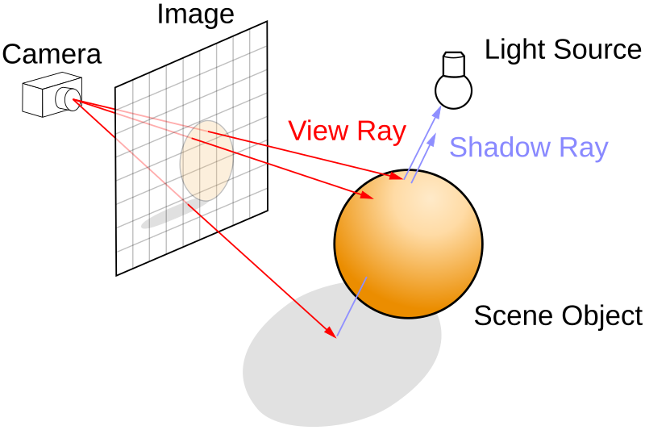
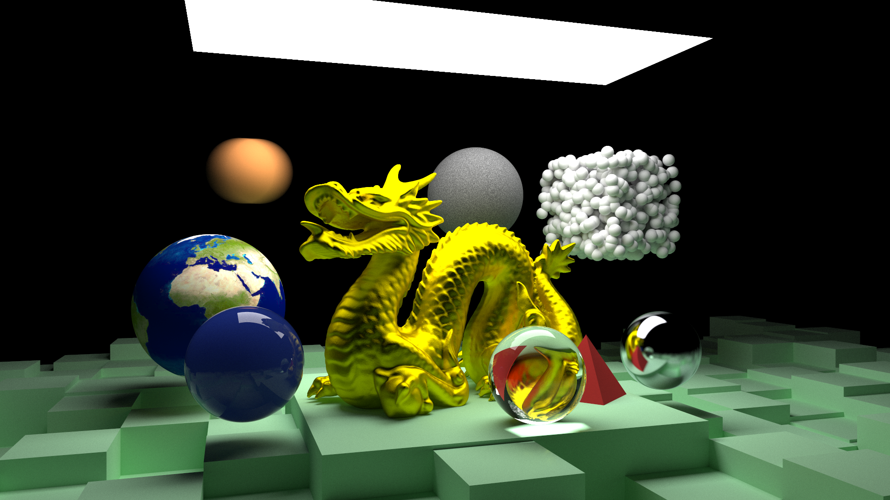
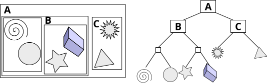

Rory Sullivan
Allen Institute
16 April 2025
About Me
- Grew up in Ireland
- Moved to Seattle 2 years ago
- BSc Mathematics
- Working as a software engineer for 4 years
- TypeScript, C#, Python, SQL, Rust
- Rock climbing, skiing
What is ray tracing?

Rust Ray Tracer
- Passion project to build a ray tracer from scratch
- Based on the 'Ray Tracing in One Weekend' series
- Built with Rust
- Does CPU ray tracing
Rust Ray Tracer

Bounding Volume Hierarchy

WebGL project
Link
Abbey Capital
- Financial fund manager
- Built internal tools
Atlas
-
Complete re-build of the company's internal fund accounting app
-
C# ASP.NET backend, TypeScript React frontend, MySQL database
- Fully running in AWS
Atlas
- Specification
- Design
- Build
- Parallel testing
- Production
Atlas
- x20 improvement in core calculations (20mins to 1min)
-
Greatly improved UI
- Modern UI design
- Real-time updates
- Automatically highlight problems
- Easy filtering and searching
- New dashboards with charts
-
Colloquially users greatly preferred the new system and it sped
up their work
Dry Rock
Link